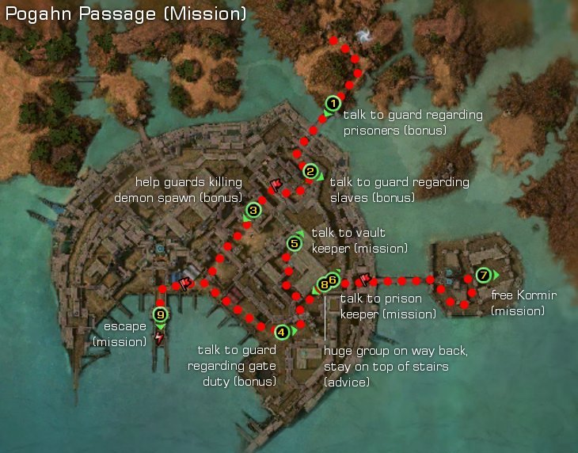

Elite: Enchanter's Conundrum
M7a
Pogahn Passage
◉ Mission Map

Click to enlarge · Local cache · Wiki
Summary (click to expand)
Kormir has been captured! She is to be executed, but with the assistance of Margrid the Sly , you've managed to secure a set of Kournan armor and plan on infiltrating Gandara to rescue her. As her price, Margrid asks that you also help her acquire the Diadem of Lady Glaive from the base's vault. After which you will proceed to the prison, break out Kormir, and rush to the docks to escape.
Region: Kourna · Mission: 7a of 20 · Type: Cooperative
Required hero: Margrid the Sly
Path: Margrid path
✓ Objectives
Rescue Kormir from Gandara.
- Escort Margrid to the Gandaran treasure vault to retrieve the Diadem of Lady Glaive.
- Free Kormir from the Kournan prison.
- Escape from Gandara with Kormir and Shahai.
- Optional: Escort the Sunspear prisoners to the prison.
- Optional: Obtain the prison code for entry into the prison.
- Optional: The demon is out of control! You can either help the guards or stand aside and let them fight on their own.
- Optional: Take over gate duty for some guards.
- *BONUS* Complete optional objectives.
→ Walkthrough
Your party starts under the Kournan Guardsman effect, disguised as Kournan guards to avoid early confrontations. During this time, players can accomplish the bonus objectives which are very simple.
Proceed to the treasure vault (point 5) to trigger Margrid's dialogue to retrieve the Diadem of Lady Glaive and now head to the prison gate (point 6). Prison Keeper Shelkesh will ask the code to clear passage.
- If you acquired the password from the guard at the entrance of the fort, you can pass through unobstructed.
- However, should you not have the password or choose the option to give the wrong password, the 3 hostile Kournans will spawn, and Shelkesh will turn hostile, although he will not move or attack. The gate will open when all 4 foes are dead.
Upon reaching the prison, kill Jailer Gahanni and the other guards and a cinematic will start (point 7).
Now, you have fifteen minutes to escape by reaching the docks with Kormir and Shahai. The exit can be found in only half the counter's time so there is no need to rush through as the clock may imply. There are two deadly spots:
- The second and third Kournan groups after crossing back the bridge: Players will find the second group to be small and static, but a third larger group is on its way towards the bridge. Instead of engaging the second group, wait until the third climbs the stairs and move far ahead from the second group. This will help avoid over-aggroing and having to fight a large mob with two Kournan Priests healing each other. Since Margrid the Sly is a required hero, she can be used to lure the third group (flag and un-flag), because if a player attempts to pull, Kormir and Shahai will follow, risking mission failure.
After dispatching these groups, you may either travel north through the fort or south along the docks, both paths rejoin at the dock.
- The final battle at the docks has four static guards and another group behind them lead by Captain Nebo, a powerful elementalist boss capable of dealing massive area damage with Fire Magic spells. Lure the four guards first to reduce enemies and only then engage the last group.
Finally, walk to the end of the dock to complete the mission.
★ Bonus
These are four tasks that need to be accomplished before Kormir and Shahai's cinematic:
- Talk to Guard Captain Kahturin to obtain the prison code.
- Talk to Captain Nahnkos to escort Sunspear Prisoners, who will assist in battles but are not required to survive.
- Trigger the Kourna Guards dialogue involving the Demon Spawn, either helping them or not will count as done.
- Talk to Guard Linko to take over gate duty. You don't need to watch them leave nor stay, just continue with the mission.
◆ Hard Mode
No dedicated Hard Mode section on the wiki — expect tougher foes and adjusted mechanics. See walkthrough notes.
☠ Bosses & Elites
✦ Tips & Notes
Skill recommendations
- If your party has anyone that deals damage via attacks, consider bringing skills that remove stances, bypass blocking or punish blocking to use against the Kournan Bowman, who use Whirling Defense.
- The final elementalist boss is dangerous to the NPCs you must keep alive.
- Ward Against Harm and/or Ward Against Elements help reduce the damage, until they move outside the wards. Shelter and Union will also help keep the NPCs alive
- Interrupts also help against the boss. Since Margrid is required for the mission, equip her with Distracting Shot and/or Savage Shot and lock her on the boss to help suppress damage.
- Enchantment-based builds are vulnerable to enchantment removal by Kournan Oppressors and Seers.
- Hex removal skills could be unnecessary; the only hex spells your party will encounter are Enchanter's Conundrum (the hex that is applied has no impact if your party does not use enchantments) and Life Siphon (ends when its caster dies).
Notes
- Kormir follows the party leader, never attacks and rarely uses skills except for "Incoming!". Foes cannot target her but she does take damage from area of effect skills.
- Occasionally, Kormir and/or Shahai may get stuck in the prison around the bridge. Make sure they are following as they are required to reach the docks to complete the mission.
- Before entering the fortress gate, you can explore the Gandara, the Moon Fortress area, which is completely free of foes.
- There is a dialogue sequence between a Kournan Guard and a Kournan Captain that seems to be reversed, that is, the Guard speaks the Captain's lines, and the Captain, the Guard's.
- Using your keyboard to move around during the end mission cinematic will contribute about 0.1% to the Elonian Cartographer title.
- After completing this mission, your party will be taken to Moddok Crevice.
- Completion of this mission will fill in page #5 in the Night Falls storybook.